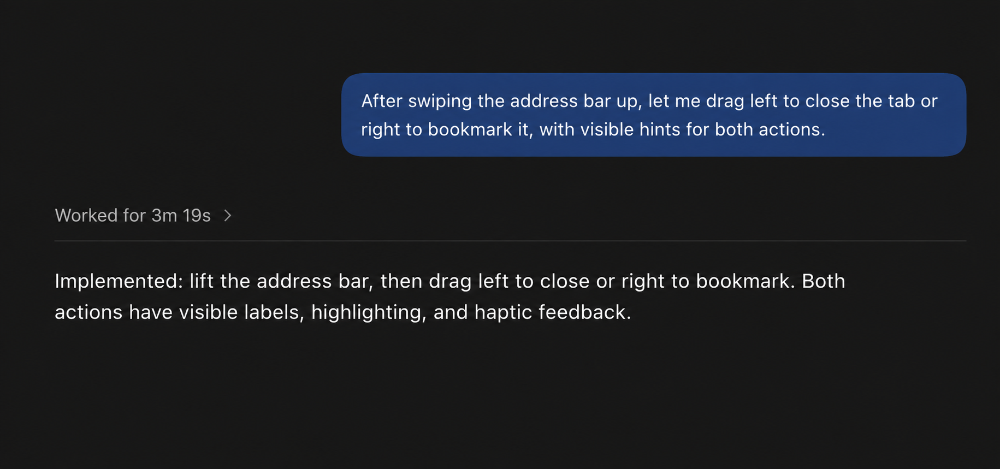
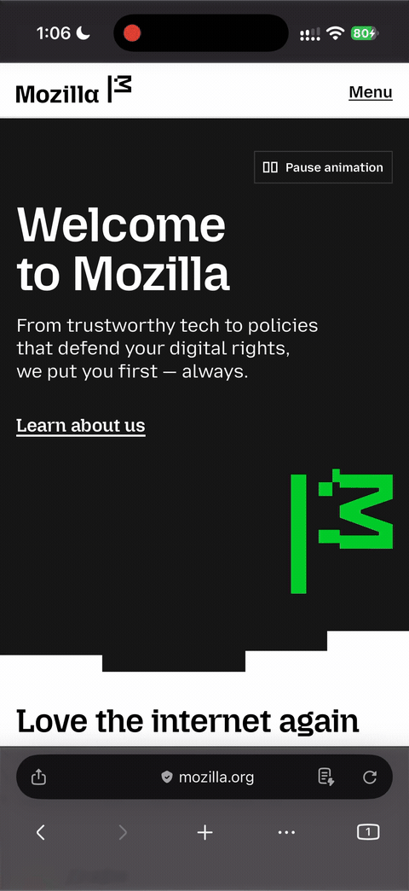
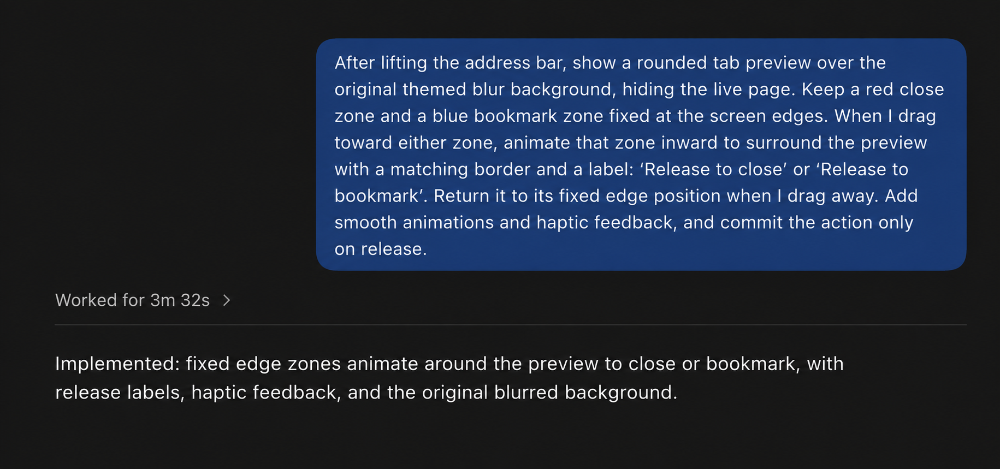

(really)Rapid prototyping
with AI
Test more ideas.Get feedback sooner.
- Bookmark all
open tabs - Distraction control
- AI compare tabs
- Microinteractions
- Agentic browsing
- Save reading list
offline - Homepage shortcut
folders - Quicker access
to incognito
AI may not code
as good as you(yet)
but AI does code faster than you
You are a senior
iOS engineer...SKILLS.mdMCPAgent OrchestrationRAGSet up a team of agents
iOS engineer...SKILLS.mdMCPAgent OrchestrationRAGSet up a team of agents
Just use the chat box.
“After swiping the address bar up, let me drag left to close the tab or right to bookmark it, with visible hints for both actions.”


Created with GPT 6 Sol on Medium Reasoning.

Created with GPT 6 Astra on High Reasoning.
Tips & tricks.
Fast mode
Spend less time waiting when iteration speed matters.
Codex: /fast on
Claude Code: /fast
Reasoning effort
Start at the default. Turn it up for ambiguous or complex work.
Codex: model picker
Claude Code: /effort
Give it eyes
Share screenshots or recordings. Ask for visual evidence in return.
Tell it to use Simulator
or iPhone Mirroring
The baseline has changed.
A bad experience months ago may not predict today.